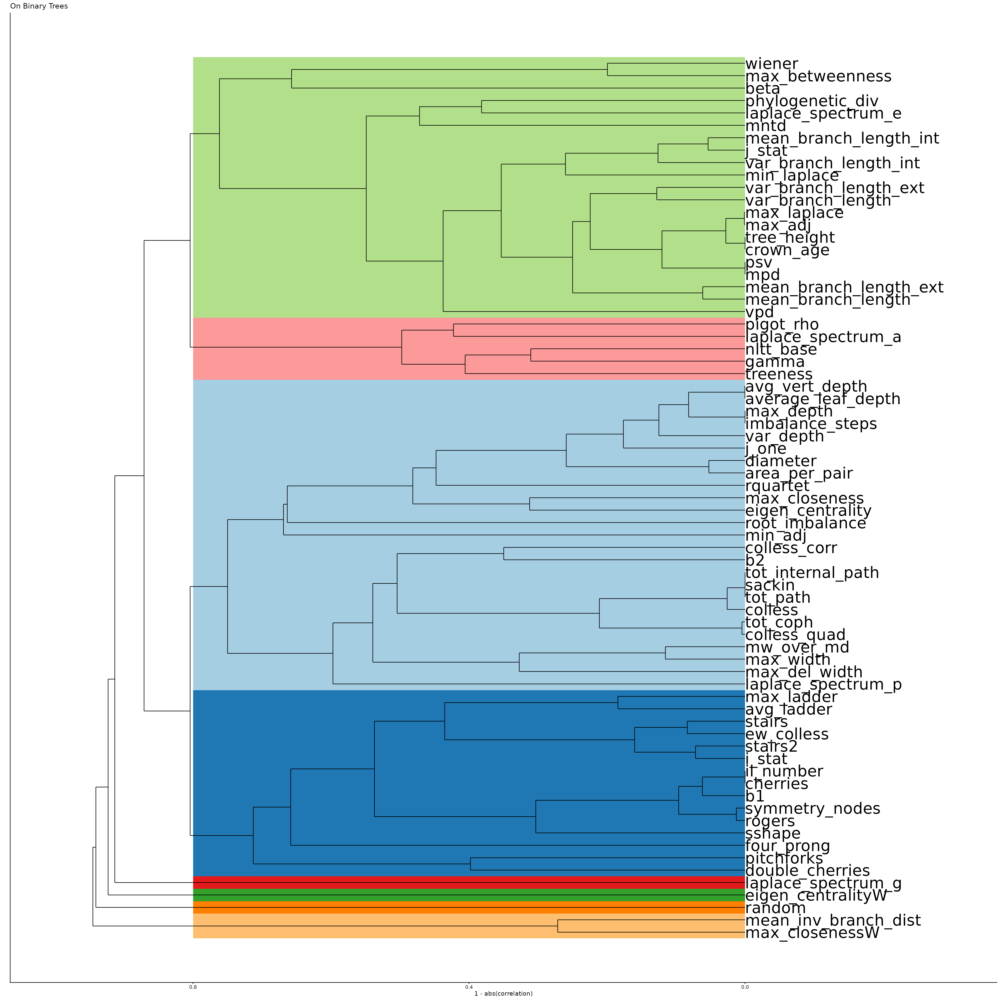
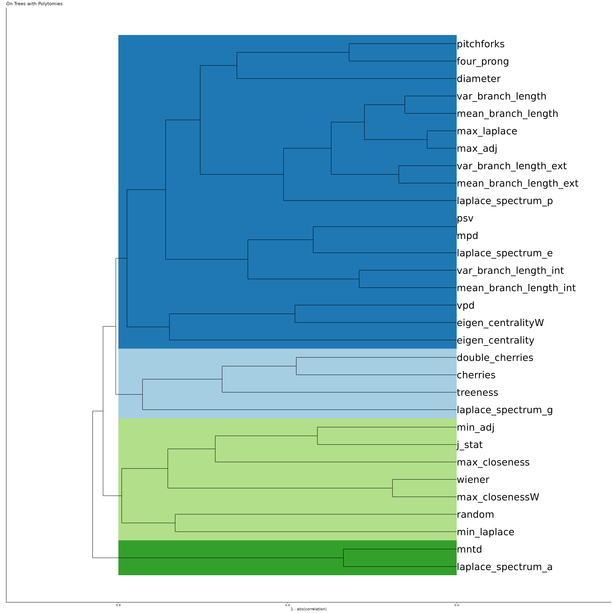

Correlations
With the ongoing development and addition of new statistics, here we document the correlations between all statistics, as measured on the collection of empirical trees, as used in Janzen (2024).
Loading data
We load the data from the supplement, hosted on GitHub.
begin <- "https://raw.githubusercontent.com/thijsjanzen/treestats-scripts/main/datasets/phylogenies/fracced/" # nolint
tree_collection_files <- c("amphibia_fracced.rds",
"birds_fracced.rds",
"ferns_fracced.rds",
"mammals_fracced.rds",
"ray_finned_fish_fracced.rds",
"sharks_fracced.rds",
"vascular_plants_fracced.rds")
taxa_names <- c("Amphibians", "Birds", "Ferns", "Mammals",
"Ray finned Fish", "Cartaliginous Fish", "Vascular Plants")
found_stats <- c()
for (i in seq_along(tree_collection_files)) {
raw_url <- paste0(begin, tree_collection_files[i])
con <- url(raw_url, open = "rb")
on.exit(close(con))
tree_collection <- readRDS(con)
families <- names(tree_collection)
cat(taxa_names[i], "\n")
for (j in seq_along(tree_collection)) {
focal_tree <- tree_collection[[j]]
if (length(focal_tree$tip.label) >= 10) {
if (!ape::is.ultrametric(focal_tree)) {
testthat::expect_output(
focal_tree <- phytools::force.ultrametric(focal_tree)
)
}
all_stats <- treestats::calc_all_stats(focal_tree, FALSE)
to_add <- unlist(all_stats)
# we also need to add if they have polytomies
is_binary <- treestats::check_binary(focal_tree)
to_add <- c(families[j], is_binary, to_add)
found_stats <- rbind(found_stats, to_add)
}
}
}## Amphibians## Loading required namespace: RSpectra## Birds
## Ferns
## Mammals
## Ray finned Fish
## Cartaliginous Fish
## Vascular PlantsWe add one statistic with random values to the dataset, as a benchmark for a completely uninformative statistic.
num_stats <- length(names(all_stats))
colnames(found_stats) <- c("Family", "is_binary", names(all_stats))
found_stats <- tibble::as_tibble(found_stats)
found_stats$random <- runif(n = length(found_stats$Family))
# remove failed calculations:
#to_remove <- which(is.na(found_stats$colless))
#found_stats <- found_stats[-to_remove, ]
found_stats2 <- found_stats |>
dplyr::mutate_at(3:(num_stats + 3), as.numeric)Statistics are known to correlate with tree size (see also the corresponding vignette), so we correct for this effect by calculating the residuals of a linear regression of each statistic against tree size, and then calculating the correlations between these residuals.
get_cor <- function(local_stats) {
local_stats2 <- local_stats |>
dplyr::mutate_at(3:(num_stats + 3), as.numeric)
local_stats2 <- as.data.frame(local_stats2[, 3:(num_stats + 3)])
# remove NA statistics
to_remove <- c()
for (i in seq_len(ncol(local_stats2))) {
if (any(is.na(local_stats2[, i]))) {
to_remove <- c(to_remove, i)
}
}
if (length(to_remove)) local_stats2 <- local_stats2[, -to_remove]
res_cor <- stats::cor(as.data.frame(local_stats2), method = "pearson")
res_cor2 <- res_cor
for (i in seq_along(res_cor[1, ])) {
for (j in seq_along(res_cor[1, ])) {
stat1 <- colnames(res_cor)[i]
stat2 <- colnames(res_cor)[j]
if (stat1 != stat2) {
if (stat1 != "number_of_lineages" && stat2 != "number_of_lineages") {
x <- unlist(as.vector(local_stats2[stat1])) # nolint
y <- unlist(as.vector(local_stats2[stat2])) # nolint
z <- unlist(as.vector(local_stats2["number_of_lineages"])) # nolint
a1 <- nlme::gls(y ~ z)
a2 <- nlme::gls(x ~ z)
found_cor <- cor(a1$residuals, a2$residuals)
res_cor2[i, j] <- found_cor
}
}
}
}
return(res_cor2)
}
found_stats_binary <- found_stats2 |>
filter(is_binary == TRUE)
master_cor_binary <- get_cor(found_stats_binary)
found_stats_poly <- found_stats2 |>
filter(is_binary == FALSE)
master_cor_polytomy <- get_cor(found_stats_poly)Binary trees
Then, we plot it as a dendrogram, with added shading for groups, where closeness in the tree is calculated as a function of 1 - abs(correlation), so that both positive and negative correlations are considered as close, thus statistics that group together in the dendrogram are those strongly related / covering the same information. Shaded areas are based on grouping those groups together with at least a correlation of 0.2, which is somewhat arbitrary, but seems to look reasonable, and avoids creating many small groups.
cor1 <- master_cor_binary
cor1 <- as.matrix(cor1)
to_remove <- which(colnames(cor1) == "number_of_lineages")
cor1 <- cor1[-to_remove, -to_remove]
cor1 <- as.data.frame(cor1)
cor1 <- tibble::as_tibble(cor1)
cor1 <- cor1 |>
dplyr::mutate_at(seq_len(ncol(cor1)), as.numeric)
res_dist <- stats::as.dist(1 - abs(as.matrix(cor1)))
hc <- hclust(res_dist, method = "average")
dend0 <- stats::as.dendrogram(hc)
ddata <- ggdendro::dendro_data(hc, type = "rectangle")
xmax <- 0.8
clust_ref <- dendextend::cutree(dend0, h = xmax)
xmin <- 0
all_rect <- c() # xmin, xmax, ymin, ymax
for (a in unique(clust_ref)) {
b <- clust_ref[clust_ref == a]
in_plot <- subset(ddata$labels, ddata$labels$label %in% names(b))
ymin <- min(in_plot$x) - 0.5
ymax <- max(in_plot$x) + 0.5
to_add <- c(xmin, xmax, ymin, ymax)
all_rect <- rbind(all_rect, to_add)
}
rect_plot <- data.frame(xmin = all_rect[, 1],
xmax = all_rect[, 2],
ymin = all_rect[, 3],
ymax = all_rect[, 4],
categ = seq_along(all_rect[, 1]))
lvls <- sort(unique(as.numeric(rect_plot$categ)))
rect_plot$categ <- factor(rect_plot$categ, levels = lvls)
ggplot() +
geom_rect(data = rect_plot,
aes(xmin = ymin, xmax = ymax, ymin = xmin, ymax = xmax,
fill = categ), alpha = 1) +
scale_fill_brewer(type = "qual", palette = 3) +
geom_segment(data = ggdendro::segment(ddata),
aes(x = x, y = y, xend = xend, yend = yend)
) +
geom_text(data = ggdendro::label(ddata),
aes(x = x, y = y, label = label, hjust = 0),
size = 10
) +
coord_flip() +
ylim(1, -0.3) +
theme_classic() +
theme(axis.text.y = element_blank(),
axis.ticks.y = element_blank(),
legend.position = "none") +
ylab("1 - abs(correlation)") +
xlab("") +
ggtitle("On Binary Trees")
Or as a heatmap, where red colors indicate positive correlations and blue colors indicate negative correlations.
breakz <- seq(-1, 1, length.out = 99)
cor2 <- as.matrix(cor1)
rownames(cor2) <- colnames(cor2)
hm1 <- pheatmap::pheatmap(mat = cor2,
breaks = breakz,
clustering_method = "average",
fontsize_col = 18,
fontsize_row = 18)
On trees with polytomies
Then, we plot it as a dendrogram, with added shading for groups, where closeness in the tree is calculated as a function of 1 - abs(correlation), so that both positive and negative correlations are considered as close, thus statistics that group together in the dendrogram are those strongly related / covering the same information. Shaded areas are based on grouping those groups together with at least a correlation of 0.2, which is somewhat arbitrary, but seems to look reasonable, and avoids creating many small groups.
cor1 <- master_cor_polytomy
cor1 <- as.matrix(cor1)
to_remove <- which(colnames(cor1) == "number_of_lineages")
cor1 <- cor1[-to_remove, -to_remove]
cor1 <- as.data.frame(cor1)
cor1 <- tibble::as_tibble(cor1)
cor1 <- cor1 |>
dplyr::mutate_at(seq_len(ncol(cor1)), as.numeric)
res_dist <- stats::as.dist(1 - abs(as.matrix(cor1)))
hc <- hclust(res_dist, method = "average")
dend0 <- stats::as.dendrogram(hc)
ddata <- ggdendro::dendro_data(hc, type = "rectangle")
xmax <- 0.8
clust_ref <- dendextend::cutree(dend0, h = xmax)
xmin <- 0
all_rect <- c() # xmin, xmax, ymin, ymax
for (a in unique(clust_ref)) {
b <- clust_ref[clust_ref == a]
in_plot <- subset(ddata$labels, ddata$labels$label %in% names(b))
ymin <- min(in_plot$x) - 0.5
ymax <- max(in_plot$x) + 0.5
to_add <- c(xmin, xmax, ymin, ymax)
all_rect <- rbind(all_rect, to_add)
}
rect_plot <- data.frame(xmin = all_rect[, 1],
xmax = all_rect[, 2],
ymin = all_rect[, 3],
ymax = all_rect[, 4],
categ = seq_along(all_rect[, 1]))
lvls <- sort(unique(as.numeric(rect_plot$categ)))
rect_plot$categ <- factor(rect_plot$categ, levels = lvls)
ggplot() +
geom_rect(data = rect_plot,
aes(xmin = ymin, xmax = ymax, ymin = xmin, ymax = xmax,
fill = categ), alpha = 1) +
scale_fill_brewer(type = "qual", palette = 3) +
geom_segment(data = ggdendro::segment(ddata),
aes(x = x, y = y, xend = xend, yend = yend)
) +
geom_text(data = ggdendro::label(ddata),
aes(x = x, y = y, label = label, hjust = 0),
size = 10
) +
coord_flip() +
ylim(1, -0.3) +
theme_classic() +
theme(axis.text.y = element_blank(),
axis.ticks.y = element_blank(),
legend.position = "none") +
ylab("1 - abs(correlation)") +
xlab("") +
ggtitle("On Trees with Polytomies")
Or as a heatmap, where red colors indicate positive correlations and blue colors indicate negative correlations.
breakz <- seq(-1, 1, length.out = 99)
cor2 <- as.matrix(cor1)
rownames(cor2) <- colnames(cor2)
hm1 <- pheatmap::pheatmap(mat = cor2,
breaks = breakz,
clustering_method = "average",
fontsize_col = 18,
fontsize_row = 18)